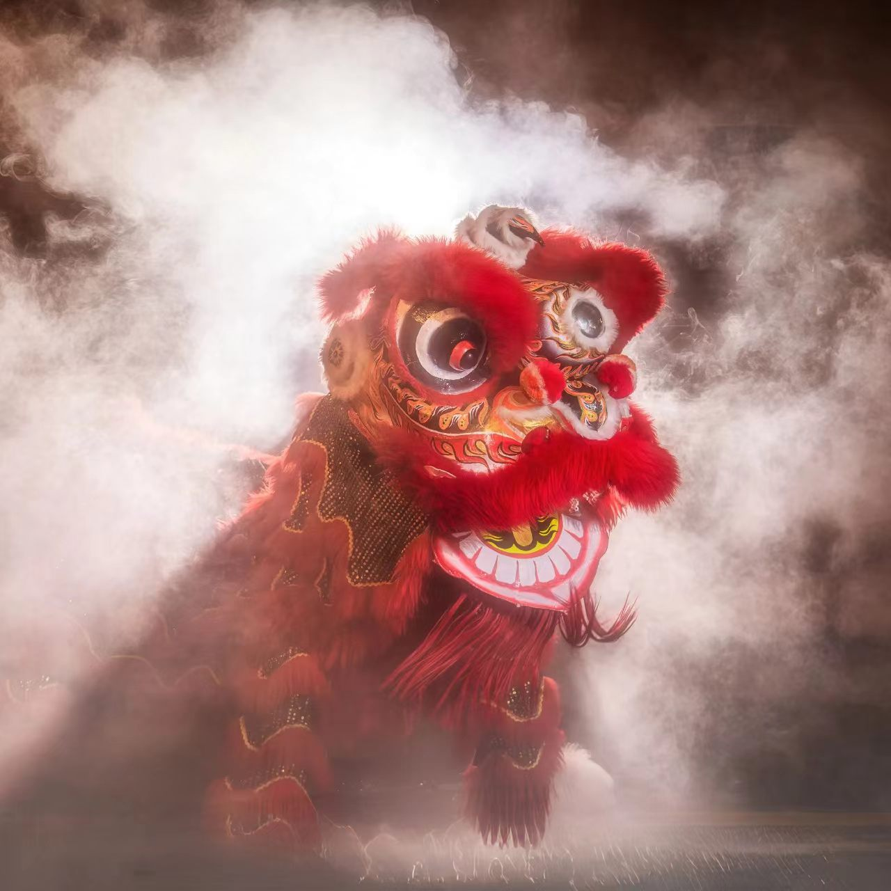

广东醒狮
岭南文化最具代表性的符号 · 国家级非物质文化遗产

一、技艺简介
广东醒狮，又称"南狮"，是流行于广东、广西及东南亚地区的传统民间舞蹈，以威武雄壮、灵动活泼的表演风格著称。醒狮融合了武术、舞蹈、音乐等多种艺术元素，是岭南文化最具代表性的符号之一。
醒狮表演以"采青"为核心，狮子通过腾、挪、闪、扑等动作，展现威武勇猛的气势，寄托着驱邪避灾、迎祥纳福的美好寓意。
二、历史渊源
广东醒狮起源于唐代，盛行于明清。相传唐代已有"五方狮子舞"，后传入岭南地区，与当地武术文化相结合，形成了独具特色的南狮风格。
2006年，广东醒狮被列入国家级非物质文化遗产名录。
三、主要种类
- 佛山醒狮：以佛山为中心，造型威武，技艺精湛
- 广州醒狮：以广州为中心，灵动活泼，表演丰富
- 鹤山醒狮：以鹤山为中心，刚柔并济，独具特色
四、表演形式
- 采青：醒狮最核心的表演程式，狮子通过高难度动作采食"青"
- 巡游：节日庆典中沿街巡游，与民同乐
- 擂台赛：醒狮之间的技艺比拼，精彩激烈
- 贺诞：在庙会、庆典中表演，祈福纳祥
五、图案寓意
- 红色醒狮：象征吉祥如意、喜庆祥和
- 黄色醒狮：象征财富富贵、事业兴旺
- 黑色醒狮：象征威猛刚健、驱邪避灾
- 采青：象征生机勃勃、好运连连
"一声鼓响，醒狮跃起。舞的是狮，扬的是威，传的是岭南人骨子里的精气神。"